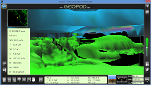

What is Geopod?
Geopod is an open source, java-based plugin for the Integrated
Data Viewer (IDV), a geoscience visualization software framework
created by Unidata.
Developed by the Computer Science and Earth Science departments at
Millersville University
through a National Science Foundation grant, Geopod is a learning
tool designed to enhance undergraduate level earth science
education by providing students and instructors with a novel and
intuitive way to explore meteorological concepts. Geopod presents a
new perspective and simplified interface for using some important
features of traditional IDV, while including new features to
enhance learning and facilitate classroom use.
How does Geopod help
students learn?
Geopod changes how students interact with
the meteorological data presented with IDV. Rather than simply
viewing a 3D image on a 2D screen, Geopod users are immersed in a
3D environment where they can navigate with video-game like
controls, see atmospheric conditions at their current location, and
use a variety of systems to gather additional data as they fly
through the atmosphere. This unique, intuitive interaction style is
designed to motivate students to explore the atmosphere and
encourage them to learn meteorological concepts.
As students explore the atmosphere, Geopod uses a variety of techniques to help them to understand and visualize atmospheric conditions. One of the most significant of these is depicting isosurfaces of various parameters which allow students to see all locations (as a 3D surface) where those parameters take on particular values. Geopod is capable of displaying isosurfaces for a variety of different parameters or for the same parameter at multiple values simultaneously. Rather than just viewing these isosurfaces from a distance, students can fly through them to investigate their appearance at close range.
Additionally, as students fly through the atmosphere to explore isosurfaces, Geopod’s continuously updating parameter display panel shows the current values of up to 19 different parameters. This allows students to investigate not just the shape of the isosurface, but its influence on and the interactions among many other parameters.  To further enhance learning, the isosurface lock mechanism allows students to “lock on” to an isosurface and fly along the surface, observing how other parameters change while the one parameter remains constant.
In addition to the primary learning mechanisms of isosurface and parameter display, a variety of other features like the Dropsonde device, Particle Imager, Note Location system and many others help students gather data and learn meteorological concepts. See our Features page for more details.
To facilitate student exploration and minimize time spent learning the software, Geopod’s interface was designed to be clean, easy-to-use, and accessible to novices and experts alike. In 2010 we conducted a usability study (PDF) to help us find and address any user difficulties, and we have been improving continuously ever since.
Does Geopod present accurate
atmospheric conditions?
Absolutely. The data used in
Geopod for isosurface rendering, parameter display, and all other
subsystems is authentic geophysical data taken from data sources
loaded into IDV. As such it is based on actual physics, thus
exhibiting technical accuracy and scientific soundness.
How can I learn more about
Geopod?
To find out more about what Geopod has to offer, visit our
Features page or use the resources
below:
Geopod is open source and freely available to the public: Browse Geopod's source code
If you would like to try Geopod for yourself, just visit the Install page for instructions. We are
still in the testing stage but we welcome friendly users and
constructive criticism. If you have additional questions, feel free
to contact us.